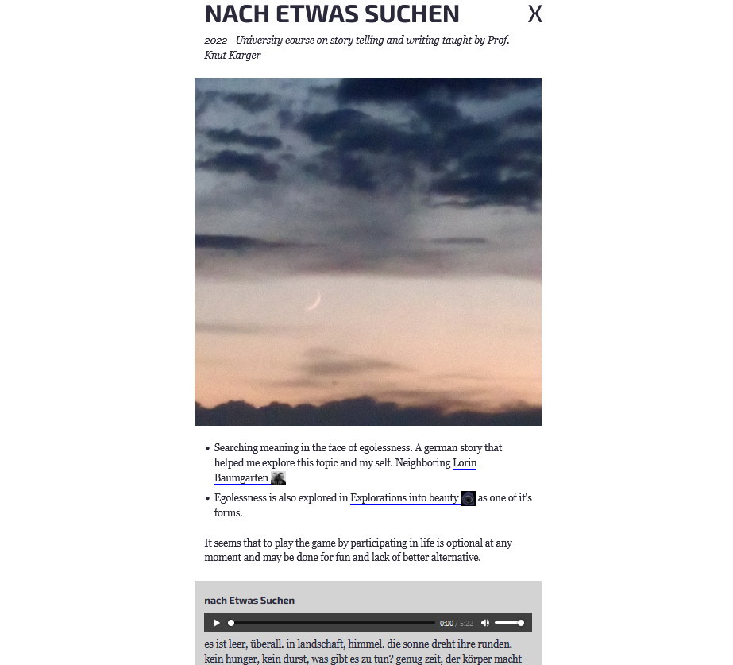

Created , last changed
Space to develop ideas until they have grown up to earn their own space. Mortality is high though.
Inbox
cyberspace
Reaching cyberspace is an interface problem. If the computer would respond to my will more closely, my mind would enter it more completely. Sometimes I fear that it is mostly here already and it just turned out underwhelming.
Invention of telephones is followed by people who do nothing but phonecalls. Sucks. Tech can merge with nature if it allows to contain it: Make the telephone usable, automatable by anyone.
preliminary expression. I wonder if cyberspace exist, what it looks like.
It seems, any ideological battle, any spiritual one, would be fought in virtual spaces because they adapt faster, can be more expressive. How good are todays virtual spaces? what would the high quality ones look like?
Visiting the endless worlds. Building a bridge to reality is an impossible translation, the work to break myself at.
May the spirits remain informed by mortality and journey far.
2024-05-15 08:28 Proto spirit stream
It aimed to be maximally accurate. I'm an opaque blob with some projects on the surface.
Who am I to categorize my project correctly? Instead, I dream of maps. They speak for themselves and display opportunity.
So projects are scattered over the surface, users were able to rotate the blob. The distance between them was determined by "connections" I set manually. Connected blobs attract each other and disconnected ones repell each other.
This was meant to lead to a visually quickly and intuitively understood blob distribution.
bigger spheres = more time spent on the project
brighter spheres = newer project
thumbnails of proximate spheres that act as buttons to the projects and make them more recognizable.


In the summary at the beginning of each project page, connected notes (neighbors) were referenced explitly to lay out the structure and provide further reading.
The dynamically generated content was undiscovered by crawlers, required javascript and was inefficient to use and to add to.
decentralization
bitcoin whitepaper
ethereum whitepaper (original)
ethereum whitepaper (updated?)
karpathy blockchain implementation
futarchy
2024-05-11 08:15 Vitalik Buterin - Coordination, Good and bad
One important property of especially the milder cases of collusion is that one cannot determine whether or not an action is part of an undesired collusion just by looking at the action itself.
[...]votes where vote selling is permitted quickly collapse into plutocracy.
[...] in [...] cooperative game theory, we can prove that there are large classes of games that do not have any stable outcome (called a "core"). In such games, whatever the current state of affairs is, there is always some coalition that can profitably deviate from it.
One important part of that set of inherently unstable games is majority games. A majority game is formally described as a game of agents where any subset of more than half of them can capture a fixed reward and split it among themselves

Counter-coordination. The fact that a system is decentralized makes it easy for participants not participating in the collusion to make a fork that strips out the colluding attackers and continue the system from there.
mechanisms against collusion:
- privacy protection
- secret ballot
- protection of whistleblowers
- reward to whistleblowers
- Counter-coordination
- skin in the game for the colluders
- Decentralization in physical space
- Decentralization between role-based constituencies
- Schelling points, allowing large groups of people to quickly coordinate around a single path forward. Complex Schelling points could potentially even be implemented in code (eg. recovery from 51% attacks can benefit from this).
- Speaking a common language (or alternatively, splitting control between multiple constituencies who speak different languages)
- Using per-person voting instead of per-(coin/share) voting to greatly increase the number of people who would need to collude to affect a decision
This all leads us to an interesting view of what it is that people building social systems do. One of the goals of building an effective social system is, in large part, determining the structure of coordination: which groups of people and in what configurations can come together to further their group goals, and which groups cannot?
(much of this thought seems unnecessary to me. The structure of reality will reveal itself when the tools allow it. If collusion is the optimal strategy, then so be it. Not sure what the purpose of a social system is. If anything were allowed and people build structure on it like filters, undoing privacy, subspaces, would it not be desirable? The best system is no system? If the structure can contain reality it will, and reality, as death, will be the appropriate judge?
2024-05-10 12:47 Vitalik Buterin - The end of my childhood
Zuzalu
the impossible provably optimal governance system
| Traditional stack | Decentralized stack |
|---|---|
| Banking system | ETH, stablecoins, L2s for payments, DEXes (note: still need banks for loans) |
| Receipts | Links to transactions on block explorers |
| Corporations | DAOs |
DNS (.com, .io, etc) |
ENS (.eth) |
| Regular email | Encrypted email (eg. Skiff) |
| Regular messaging (eg. Telegram) | Decentralized messaging (eg. Status) |
| Sign in with Google, Twitter, Wechat | Sign in with Ethereum, Zupass, Attestations via EAS, POAPs, Zu-Stamps... + social recovery |
| Publishing blogs on Medium, etc | Publishing self-hosted blogs on IPFS (eg. using Fleek) |
| Twitter, Facebook | Lens, Farcaster... |
| Limit bad actors through all-seeing big brother | Constrain bad actors through zero knowledge proofs |
[...]a major missing piece from this stack is democratic governance technology.
???
Carbonvote
Gitcoin
2024-04-25 13:44
meta/adventure stack
family, friends
spirit stream stack
simple tools in challenging environment
Spirit stream stack
independent learning systems
BCIs
tiny corp accelerator
personal robot
agriculture - true base of reality
spider hat
virtual clone
generate useful personal text
look for useful information
compare word network
convert text/images/video to latent space
writing systems as simple and versatile as paper
publishing framework (X, facebook,...)
site generator
news paper
2024-04-14 14:04
Videogames offer paths to the goal. Need money, friends, reputation, a house? Complete these steps: ...
They may not be easy, but the desired result can be forced by speedrunning them.
In reality the world is not responsive. Some theoretical offers are not truly available (homes, jobs, friends) without given reason. This allows believing the desired result is impossible. No clear ramp leads to it.
If the rules of the game were as obvious as "if I walk in this direction, I will eventually get to those distant mountains". Getting to the mountains is forcible at any time.
Getting a home is forcible through an axe and trees. Some groups don't permit such lowest grade, forced solutions. Imo, this is a mistake. Higher grade solutions should be available with similar simplicity.
"Steps" on the gradient between low and high grade solutions are often introduced by regulation. You make more than $x, you are in this different category and pay different taxes.
With some luck, the virtual clone (Towards insanely great AI) makes negotiation so cheap that many such rules can be thrown out.
The abandoned buildings connect to this too. They are a place of much evident progress without prohibitive rules.
High clarity tools, shining with future potential, encourage creation and exploration like nothing else I know. Erode unnecessary structure. Delete it, force it, and see what happens.
2024-04-03 19:11
A sad time, when the illusion of a serious world strikes. May chaos not come uninvited.
https://www.youtube.com/watch?v=dy6neKO-8sk
show don't tell, there is no replacement for showing because people lie, sometimes without knowing it, sometimes I lie to myself without knowing it.
- I don't value fleeting things very much
- what is not fleeting? functionality
- I value tools and the adventure they make available
what isn't concise sucks, wastes my energy. Reducing complexity and word count are driving factors behind increasing resolution /clarity in my writing.

These abandoned buildings emitted an aura of great adventure. Ironically? Similar to buildings under construction, they are asking to be used, transformed, to become part of a new story. As they become "finished", this aura weakens, they become "boring". Their (unnecessary?) shiny finish discourages major modification, like drilling into or erecting new walls.
Think solar panels. theoretically, they just need sun, cables, a box that could stand anywhere. In the "finished" homes that I know, this is (unnecessarily?) more complicated. Is there access to the roof? Possible to mount it on the facade? get cables by the window inside? Need approval from all kinds of people? What of this makes practical sense? Is it mostly a social problem? Is it solved by having virtual clones that can negotiate for people more cheaply and quickly so people can live where their spirit aligns more with the opportunities of the enironment?
Buildings that are in poor condition can suggest decay and death from carelessness, visionlessness.
They can also suggest a strong focus on what is meaningful because ressources are scarce. Maybe short term thinking dominates and many opportunities for creative exploration are out of reach. However, as someone who appreciates efficiency, it seems that a larger precentage of things in that environment are beautiful to me, compared to "nice, calm, high living standard" environments. They become too "nice" and they disgust me, make me want to leave or destroy them. I wonder where this line of thought leads.
In difficult environments I dream of the future.
In easy environments I dream of destruction.